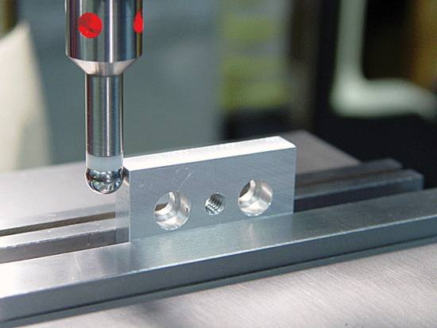

How to Set Up CNC Milling Machine?
Before answering this question “How to Setup CNC Milling Machine”, there are many factors that have to be considered.
- Is the machine a vertical or horizontal machine?
- How many axes machine have?
- What is the capacity of the tool turret?
- How are you planning on holding the part (work piece)?
It is also assumed that you know some basic machine practices, like
- How to use an edge finder.
- How to navigate through your machine’s control.
- Knowledge of basic CNC control commands.

LED edge finder
How to Set Up CNC Milling Machine
Now come to the setting up machine, although every CNC Milling machine set-up procedure is slightly different, but here are explained these generic steps which cnc machinists practice on a daily basis for a 3 axis vertical CNC Milling machine.
- Clean Surface: Clean all surfaces like table, vise jaws and part (work piece) with cloth, so that no oil drops, material chips remain there.
- Load Tool: Load tools required to complete part (including edge finder, vise leveling at 0 degree).
Load Tool CNC Mill
- Load Part: Load part (work piece) in vise or hold your part (work piece) with your machine holding arrangements.
- X,Y axis’s Offsetting: Set the part (work piece) offset. For this purpose you may use edge finder or you can do it with your End Mill Cutter (if you are using end mill cutter for tool offset, then read Tool Offset Article). First do the zero offset for the X axis. Pick up the X0 position by using edge finder. Go to the zero offset page and add the machine absolute X value to the value currently in the zero offset page’s registry. Do the same for the Y axis.
- Z axis Offsetting: After X,Y axis’s offsetting set the tool length offset for each tool by loading first tool in spindle. Manually move the Z axis down until the tool’s tip is near the Z0 position. Get a piece of 1.00 mm shim stock (always use any fix size of shim like 1 mm, 2 mm or 5 mm ) and hold it between the part (work piece) and the tip of the tool. Carefully lower the Z axis in 0.001 mm increments until the shim stock can be pulled with a slight drag. Go to your tool length offset page and enter the machine’s absolute Z value plus -1.00 mm in the tools registry. Repeat procedure to additional tools. Note: -1.00 mm is added for the shim stock’s thickness.
- Cutter Radius Compensation: Enter each tool diameter in tool length offset page. That will be helpful when you are using Cutter Radius Compensation in your program.
- Coolant or Cutting Oil: Adjust coolant lines because coolant can properly cool tools and wash chips away, and most important coolant will increase the cutter life.
Adjust coolant lines
- Cycle start: Put the machine in low feed, activate single block and then press cycle start. Be careful and read every block programmed and watch each movement the machine makes ready to stop the machine in case there are any programming errors. (You could also run the program 10 mm or whatever above the part (work piece) to make sure everything is good and use Dry Run if you feel it necessary.)